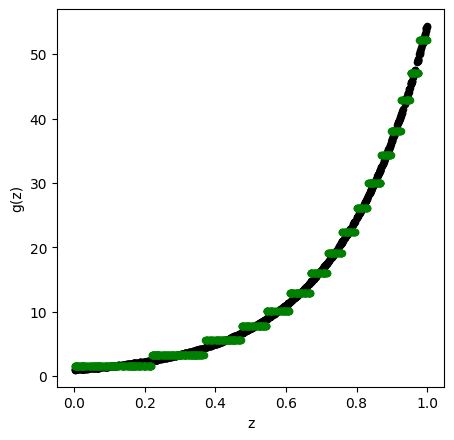
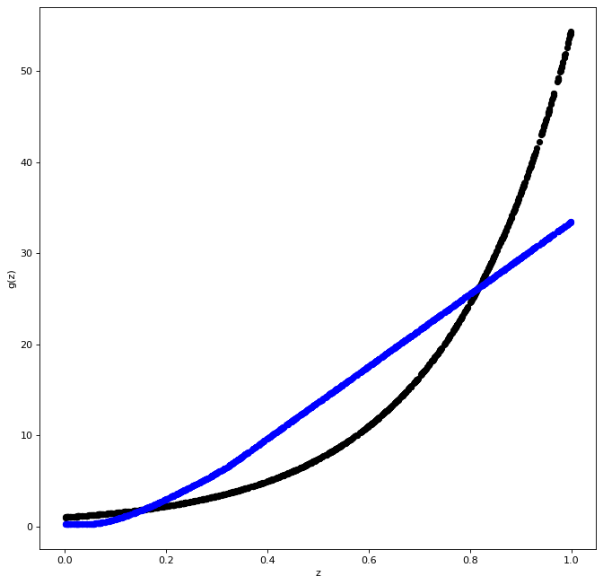
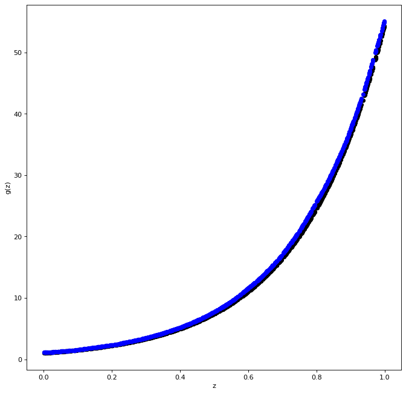

15. Functional Approximation By NN and RF#
15.1. Functional Approximations by Trees and Neural Networks#
Here we show how the function $\( x \mapsto exp(4 x) \)$ can be easily approximated by a tree-based methods (Trees, Random Forest) and a neural network (2 Layered Neural Network)
15.2. Functional Approximation by a Tree#
import numpy as np
from SyncRNG import SyncRNG
from sklearn.tree import DecisionTreeRegressor
from sklearn.ensemble import RandomForestRegressor
from sklearn.ensemble import GradientBoostingRegressor
import matplotlib.pyplot as plt
import tensorflow as tf
from tensorflow import keras
from tensorflow.keras import layers
from keras.models import Sequential
from keras.layers import Dense
import warnings
warnings.filterwarnings('ignore')
s = SyncRNG(seed = 123456)
X_train = np.zeros( 1000 ).reshape( 1000 , 1 )
print( X_train.shape )
for i in range( 0 , X_train.shape[0] ):
X_train[ i , 0 ] = s.rand()
Y_train = np.exp( 4 * X_train )
TreeModel = DecisionTreeRegressor( random_state = 0, ccp_alpha = 2.02 )
TreeModel.fit( X_train , Y_train )
pred_TM = TreeModel.predict( X_train )
fig = plt.figure( figsize = ( 5 , 5 ) , dpi = 100 )
ax1 = fig.add_subplot( 111 )
ax1.scatter( X_train , Y_train, c='black', marker="o" , s = 20 )
ax1.scatter( X_train , pred_TM , c='green', marker="o" , s = 20)
plt.xlabel( "z" )
plt.ylabel( "g(z)" )
plt.show()
(1000, 1)
s = SyncRNG(seed = 123456)
X_train = np.zeros( 1000 ).reshape( 1000 , 1 )
for i in range( 0 , X_train.shape[0] ):
X_train[ i , 0 ] = s.rand()
Y_train = np.exp( 4 * X_train )
TreeModel = DecisionTreeRegressor( random_state = 0, ccp_alpha = 2.02*0.0005/0.01 )
TreeModel.fit( X_train , Y_train )
pred_TM = TreeModel.predict( X_train )
fig = plt.figure( figsize = ( 5 , 5 ) , dpi = 100 )
ax1 = fig.add_subplot( 111 )
ax1.scatter( X_train , Y_train, c='black', marker="o" , s = 20 )
ax1.scatter( X_train , pred_TM , c='green', marker="o" , s = 20)
plt.xlabel( "z" )
plt.ylabel( "g(z)" )
plt.show()

15.3. Functional Approximation by RF#
Here we show how the function $\( x \mapsto exp(4 x) \)$ can be easily approximated by a tree-based method (Random Forest) and a neural network (2 Layered Neural Network)
s = SyncRNG(seed = 123456)
X_train = np.zeros( 1000 ).reshape( 1000 , 1 )
for i in range( 0 , X_train.shape[0] ):
X_train[ i , 0 ] = s.rand()
Y_train = np.exp( 4 * X_train )
## REstrictions to make RF from SKlearn
## similar to random forest from r package
if Y_train is not None and ( Y_train.dtype != str ):
mtry = max( [ np.round( ( X_train.shape[ 1 ]/3 ) ).astype(int) , 1 ] )
else:
mtry = np.round( np.sqrt( X_train.shape[ 1 ] ) ).astype(int)
if Y_train is not None and ( Y_train.dtype != str ):
nodesize1 = 5
else:
nodesize1 = 1
RFModel = RandomForestRegressor( random_state = 0 , n_estimators = 500 ,\
max_features = mtry , \
n_jobs = 4 , \
min_samples_leaf = nodesize1 ).\
fit( X_train , Y_train )
RFModel.fit( X_train , Y_train )
pred_RF = RFModel.predict( X_train )
fig = plt.figure( figsize = ( 5 , 5 ) , dpi = 100 )
ax1 = fig.add_subplot( 111 )
ax1.scatter( X_train , Y_train, c='black', marker="o" , s = 20 )
ax1.scatter( X_train , pred_RF , c='blue', marker="o" , s = 5)
plt.xlabel( "z" )
plt.ylabel( "g(z)" )
plt.show()
<ipython-input-26-0d93ab1bbc20>:22: DataConversionWarning: A column-vector y was passed when a 1d array was expected. Please change the shape of y to (n_samples,), for example using ravel().
RFModel = RandomForestRegressor( random_state = 0 , n_estimators = 500 ,\
<ipython-input-26-0d93ab1bbc20>:28: DataConversionWarning: A column-vector y was passed when a 1d array was expected. Please change the shape of y to (n_samples,), for example using ravel().
RFModel.fit( X_train , Y_train )
15.4. Boosted Trees#
# max_depth = interaction.depth
# learning_rate = shrinkage
# n_estimators = n.trees
BoostTreemodel = GradientBoostingRegressor(random_state=0 , max_depth = 4 , learning_rate = 0.01 , n_estimators = 100 )
BoostTreemodel.fit( X_train, Y_train )
pred_BT = BoostTreemodel.predict( X_train )
fig = plt.figure( figsize = ( 5 , 5 ) , dpi = 100 )
ax1 = fig.add_subplot( 111 )
ax1.scatter( X_train , Y_train, c='black', marker="o" , s = 20 )
ax1.scatter( X_train , pred_BT , c='blue', marker="o" , s = 20)
plt.xlabel( "z" )
plt.ylabel( "g(z)" )
plt.show()
c:\python\python38\lib\site-packages\sklearn\utils\validation.py:72: DataConversionWarning: A column-vector y was passed when a 1d array was expected. Please change the shape of y to (n_samples, ), for example using ravel().
return f(**kwargs)
BoostTreemodel = GradientBoostingRegressor(random_state=0 , max_depth = 4 , learning_rate = 0.01 , n_estimators = 1000 )
BoostTreemodel.fit( X_train, Y_train )
pred_BT = BoostTreemodel.predict( X_train )
fig = plt.figure( figsize = ( 10 , 10 ) , dpi = 80 )
ax1 = fig.add_subplot( 111 )
ax1.scatter( X_train , Y_train, c='black', marker="o" , s = 30 )
ax1.scatter( X_train , pred_BT , c='blue', marker="o" , s = 30)
plt.xlabel( "z" )
plt.ylabel( "g(z)" )
plt.show()
c:\python\python38\lib\site-packages\sklearn\utils\validation.py:72: DataConversionWarning: A column-vector y was passed when a 1d array was expected. Please change the shape of y to (n_samples, ), for example using ravel().
return f(**kwargs)
15.5. Same Example with a Neural Network#
# define the keras model
model = Sequential()
model.add(Dense(200, input_dim = X_train.shape[1], activation = 'relu'))
model.add(Dense(20, activation = 'relu'))
model.add(Dense(1))
# compile the keras model
opt = keras.optimizers.Adam(learning_rate=0.01)
mse = tf.keras.losses.MeanSquaredError()
mae = tf.keras.metrics.MeanAbsoluteError(name="mean_absolute_error", dtype=None)
model.compile(loss=mse, optimizer= opt , metrics=mae)
model.summary(line_length=None, positions=None, print_fn=None)
Model: "sequential_3"
_________________________________________________________________
Layer (type) Output Shape Param #
=================================================================
dense_6 (Dense) (None, 200) 400
_________________________________________________________________
dense_7 (Dense) (None, 20) 4020
_________________________________________________________________
dense_8 (Dense) (None, 1) 21
=================================================================
Total params: 4,441
Trainable params: 4,441
Non-trainable params: 0
_________________________________________________________________
num_epochs = 1
model.fit( X_train, Y_train, epochs= num_epochs , batch_size=10, verbose = 0 )
pred_NN = model.predict( X_train )
fig = plt.figure( figsize = ( 10 , 10 ) , dpi = 80 )
ax1 = fig.add_subplot( 111 )
ax1.scatter( X_train , Y_train, c='black', marker="o" , s = 30 )
ax1.scatter( X_train , pred_NN , c='blue', marker="o" , s = 30)
plt.xlabel( "z" )
plt.ylabel( "g(z)" )
plt.show()

num_epochs = 100
model.fit( X_train, Y_train, epochs= num_epochs , batch_size=10, verbose = 0 )
pred_NN = model.predict( X_train )
fig = plt.figure( figsize = ( 10 , 10 ) , dpi = 80 )
ax1 = fig.add_subplot( 111 )
ax1.scatter( X_train , Y_train, c='black', marker="o" , s = 30 )
ax1.scatter( X_train , pred_NN , c='blue', marker="o" , s = 30)
plt.xlabel( "z" )
plt.ylabel( "g(z)" )
plt.show()
